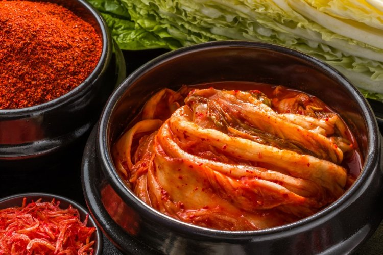
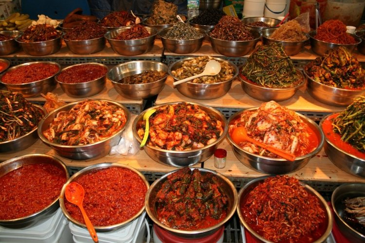
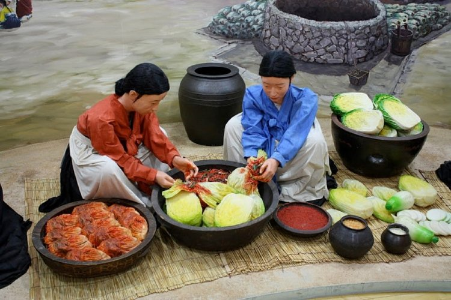

Кимчи – традиционная корейская закуска

Кимчи (также называют «кимчхи») — это традиционное корейское блюдо, которое представляет собой квашеные овощи с большим количеством приправ. На полуострове существует более ста восьмидесяти видов кимчи, но наибольшей популярностью пользуется блюдо из ферментированной пекинской капусты с красным перцем. Корейцы считают кимчи одним из главных символов страны.

Первые упоминания кимчи относят еще к первому тысячелетию до нашей эры. Их оставили путешественники из Китая в поэтическом трактате «Ши Цзин». Исследователи предполагают, что и само блюдо пришло на полуостров из соседней западной страны, но со временем приобрело черты, характерные именно для корейской кухни. Изначально блюдо называлось иначе и с китайского переводилось как «раскисшие овощи». Современное название появилось в эпоху Трех государств.
Рецепты отличаются на всех частях полуострова. Это связано с тем, что его территория вытянута с севера на юг, поэтому климат и, соответственно, растительность в разных точках неодинакова. Значение имеет также удаленность от морских берегов.
Наиболее распространенным вариантом (в том числе за рубежом) считается пячу-кимчи — блюдо из пекинской капусты. Оно представляет собой целый или разрезанный на крупные части кочан, залитый рассолом. Его листья промазываются острой пастой из чеснока, имбиря, красного перца и других специй. В зависимости от региона в блюда добавляют редис, зеленый лук, рыбный соус или морепродукты.
- Основные ингредиенты
- Китайская (пекинская) капуста
- Лук
- Лук зеленый;
- Рыбный соус (или тайский);
- Красный перец хлопьями
- Соль
- Сахар
- Добавляют по желанию
- Чеснок очищенный
- Имбирь свежий
- Бобовая паста


Следующие ступеньки отвели национальной письменности хангылю, тхэквондо и традиционной одежде ханбок. ЮНЕСКО внесло способ приготовления кимчи в фонд нематериального культурного наследия.
В Сеуле в 80-х годах открыли музей, посвященный этому блюду — в экспозиции представлено почти 200 его вариаций, инсталляции со способами приготовления и выставки, посвященные истории. Также власти Южной Кореи добились того, что только кимчи, приготовленный по классическому корейскому рецепту с использованием всех необходимых ингредиентов может считаться стандартом качества.